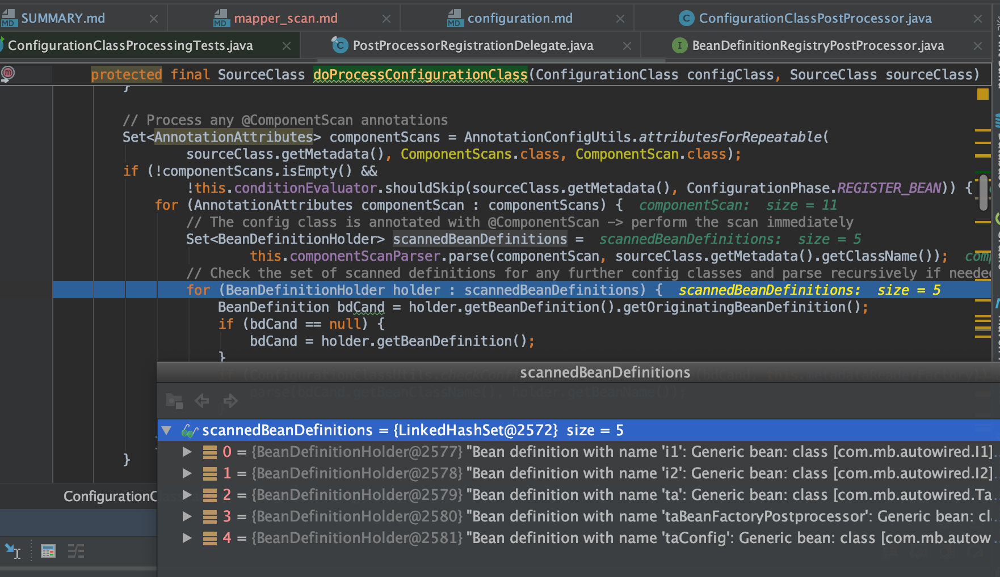
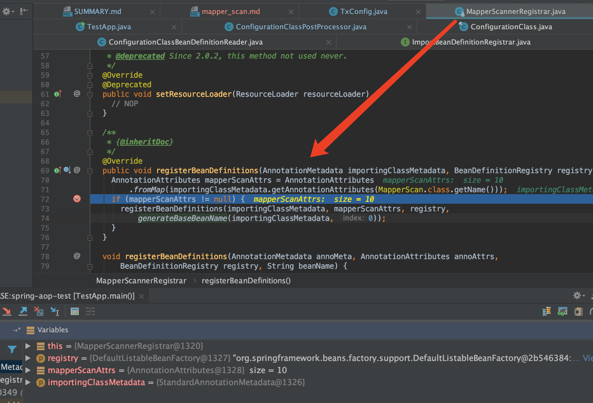
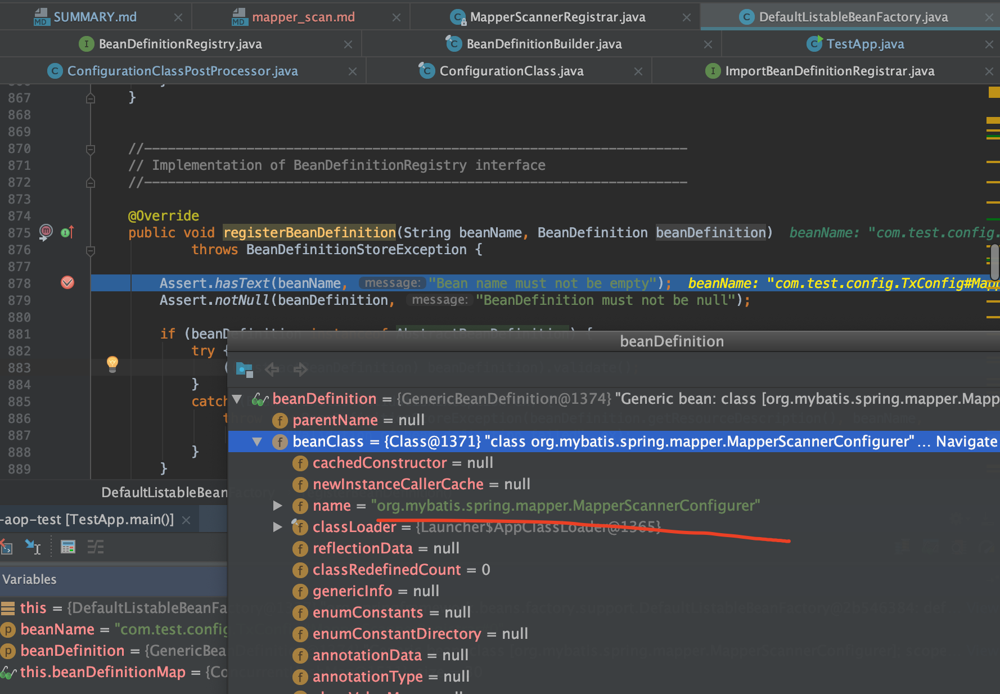

@MapperScan 原理
回顾 ConfigurationClassPostProcessor
org.springframework.context.support.AbstractApplicationContext#refresh
invokeBeanFactoryPostProcessors(beanFactory);
org.springframework.context.support.PostProcessorRegistrationDelegate#invokeBeanDefinitionRegistryPostProcessors
// ConfigurationClassPostProcessor implements BeanDefinitionRegistryPostProcessor
org.springframework.context.annotation.ConfigurationClassPostProcessor#postProcessBeanDefinitionRegistry
ConfigurationClassPostProcessor具体执行
- 先判断了
@Configuration全注解，然后得到全注解bean,作为candidate - 然后会new一个
ConfigurationClassParser - 首先执行了
parser.parse(candidates);完成Spring自己的bean扫描，并做了其它处理
org.springframework.context.annotation.ConfigurationClassParser#doProcessConfigurationClass可以看到扫描，且扫描出来都是都是ScannedGenericBeanDefinition

在parser.parse(candidates);过程中可以看到
// Process any @Import annotations
// Process any @ImportResource annotations
// Process individual @Bean methods
// Process default methods on interfaces
// Process superclass, if any
其中@Import种类很多，实现了某个特定接口的需要特殊处理
1. ImportSelector
2. ImportBeanDefinitionRegistrar
3. 其它@Import
// Candidate class not an ImportSelector or ImportBeanDefinitionRegistrar ->
// process it as an @Configuration class
对于ImportBeanDefinitionRegistrar是put到了一个如下的map中
private final Map<ImportBeanDefinitionRegistrar, AnnotationMetadata> importBeanDefinitionRegistrars =
new LinkedHashMap<>();
是在this.reader.loadBeanDefinitions(configClasses);这句去执行ImportBeanDefinitionRegistrar的
private void loadBeanDefinitionsFromRegistrars(Map<ImportBeanDefinitionRegistrar, AnnotationMetadata> registrars) {
registrars.forEach((registrar, metadata) ->
registrar.registerBeanDefinitions(metadata, this.registry));
}
其中ImportBeanDefinitionRegistrar是个接口，能够将自己定义BeanDefinition注册到Spring容器中
public interface ImportBeanDefinitionRegistrar {
/**
* Register bean definitions as necessary based on the given annotation metadata of
* the importing {@code @Configuration} class.
* <p>Note that {@link BeanDefinitionRegistryPostProcessor} types may <em>not</em> be
* registered here, due to lifecycle constraints related to {@code @Configuration}
* class processing.
* @param importingClassMetadata annotation metadata of the importing class
* @param registry current bean definition registry
*/
public void registerBeanDefinitions(
AnnotationMetadata importingClassMetadata, BeanDefinitionRegistry registry);
}
@MapperScan
spring-mybatis的 @MapperScan 注解定义如下
@Retention(RetentionPolicy.RUNTIME)
@Target(ElementType.TYPE)
@Documented
@Import(MapperScannerRegistrar.class)
@Repeatable(MapperScans.class)
public @interface MapperScan {
可以看到import了一个MapperScannerRegistrar，其定义如下(实现了ImportBeanDefinitionRegistrar)
public class MapperScannerRegistrar implements ImportBeanDefinitionRegistrar, ResourceLoaderAware {
根据前文介绍，会走到MapperScannerRegistrar的registerBeanDefinitions方法，如下（不过不同版本的MapperScannerRegistrar可能里面的实现是不一样的）

可以看到注册了一个bean:org.mybatis.spring.mapper.MapperScannerConfigurer

MapperScannerConfigurer类定义可以看到其实现了BeanDefinitionRegistryPostProcessor
public class MapperScannerConfigurer
implements BeanDefinitionRegistryPostProcessor, InitializingBean, ApplicationContextAware, BeanNameAware {
/**
* Extension to the standard {@link BeanFactoryPostProcessor} SPI, allowing for
* the registration of further bean definitions <i>before</i> regular
* BeanFactoryPostProcessor detection kicks in. In particular,
* BeanDefinitionRegistryPostProcessor may register further bean definitions
* which in turn define BeanFactoryPostProcessor instances.
*
* @author Juergen Hoeller
* @since 3.0.1
* @see org.springframework.context.annotation.ConfigurationClassPostProcessor
*/
public interface BeanDefinitionRegistryPostProcessor extends BeanFactoryPostProcessor {
/**
* Modify the application context's internal bean definition registry after its
* standard initialization. All regular bean definitions will have been loaded,
* but no beans will have been instantiated yet. This allows for adding further
* bean definitions before the next post-processing phase kicks in.
* @param registry the bean definition registry used by the application context
* @throws org.springframework.beans.BeansException in case of errors
*/
void postProcessBeanDefinitionRegistry(BeanDefinitionRegistry registry) throws BeansException;
}
我们知道Spring的自己的ConfigurationClassPostProcessor是实现了BeanDefinitionRegistryPostProcessor的,它完成了对Spring bean的扫描，那么容易猜想到MapperScannerConfigurer能实现对mybatis的@MapperScan的bean扫描出来，并加到Spring中
查看org.mybatis.spring.mapper.MapperScannerConfigurer.postProcessBeanDefinitionRegistry，可以看到mybatis自己定义了扫描器去扫描加载BeanDefinition
@Override
public void postProcessBeanDefinitionRegistry(BeanDefinitionRegistry registry) {
if (this.processPropertyPlaceHolders) {
processPropertyPlaceHolders();
}
ClassPathMapperScanner scanner = new ClassPathMapperScanner(registry);
scanner.setAddToConfig(this.addToConfig);
scanner.setAnnotationClass(this.annotationClass);
scanner.setMarkerInterface(this.markerInterface);
scanner.setSqlSessionFactory(this.sqlSessionFactory);
scanner.setSqlSessionTemplate(this.sqlSessionTemplate);
scanner.setSqlSessionFactoryBeanName(this.sqlSessionFactoryBeanName);
scanner.setSqlSessionTemplateBeanName(this.sqlSessionTemplateBeanName);
scanner.setResourceLoader(this.applicationContext);
scanner.setBeanNameGenerator(this.nameGenerator);
scanner.setMapperFactoryBeanClass(this.mapperFactoryBeanClass);
if (StringUtils.hasText(lazyInitialization)) {
scanner.setLazyInitialization(Boolean.valueOf(lazyInitialization));
}
scanner.registerFilters();
scanner.scan(
StringUtils.tokenizeToStringArray(this.basePackage, ConfigurableApplicationContext.CONFIG_LOCATION_DELIMITERS));
}